存储器概述 链接到标题
存储器分类 链接到标题
按存储介质分类 链接到标题
- 半导体存储器 TTL(集成度低，功耗高，速度快)、MOS(集成度高，功耗低)—易失
- 磁表面存储器 （磁头、磁载体）
- 磁芯存储器 硬磁材料、环状元件
- 光盘存储器 激光、磁光材料
按存取方式分类 链接到标题
-
存取时间与物理地址无关(随机访问)
- 随机存储器 在程序的执行过程中可读可写
- 只读存储器 在程序的执行过程中只读
-
存取时间与物理地址有关(串行访问)
- 顺序存取存储器 磁带
- 直接存取存储器 磁盘
按在计算机中的作用分类 链接到标题
-
主存储器
- RAM
- 静态 RAM
- 动态 RAM
- ROM
- MROM
- PROM
- EPROM
- EEPROM
- RAM
-
Flash Memory
-
高速缓冲存储器(Cache)
-
辅助存储器 磁盘、磁带、光盘
存储器的层次结构 链接到标题
存储器三个主要特性的关系 链接到标题
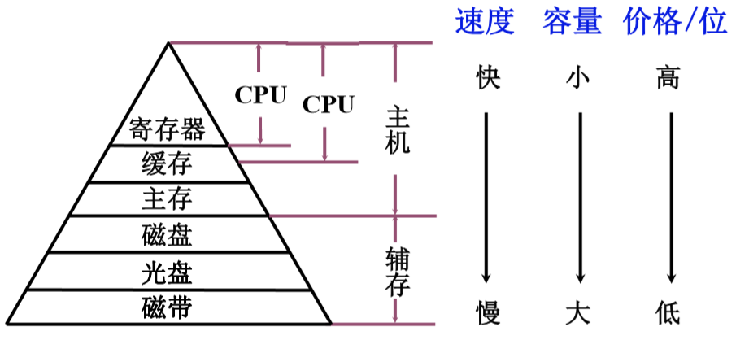
缓存-主存层次和主存-辅存层次 链接到标题
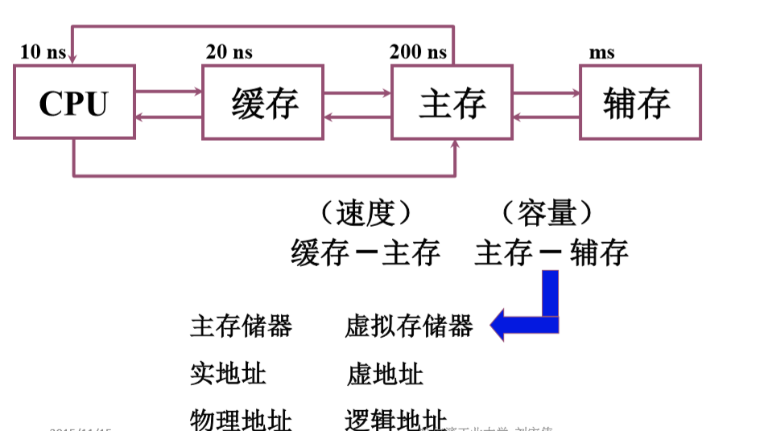
主存与辅存构成的空间，叫做虚拟存储器。我们定义了一个空间存储程序叫做虚地址也就是逻辑地址。
程序的局部性原理：指程序在执行时，呈现出局部性规律，即在一段时间内，整个程序的执行仅限于程序中的某一部分。相应地，执行所访问的存储空间也局限于某个内存区域。
主存储器 链接到标题
主存的基本组成 链接到标题
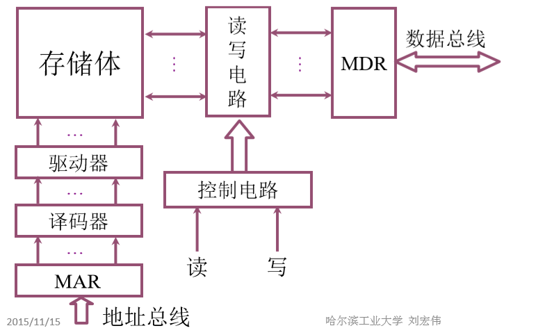
MAR 保存了需要访问的存储单元的地址，经过译码器选择实际内存中相应的地址，由读写控制电路控制 MDR 内的内容写入和读出。
主存和 CPU 的联系 链接到标题
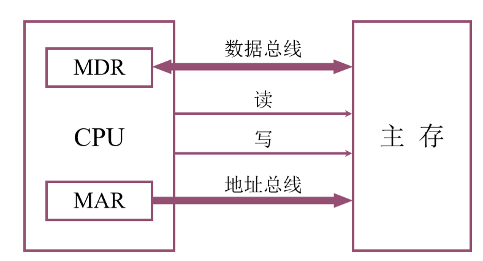
MAR 是单向的，MDR 是双向的
主存中存储单元地址的分配 链接到标题
12345678H 这个数据如何在主存储器中进行存储？
大端模式，是指数据的高字节保存在内存的低地址中，而数据的低字节保存在内存的高地址中，这样的存储模式有点儿类似于把数据当作字符串顺序处理：地址由小向大增加，而数据从高位往低位放；这和我们的阅读习惯一致。
小端模式，是指数据的高字节保存在内存的高地址中，而数据的低字节保存在内存的低地址中，这种存储模式将地址的高低和数据位权有效地结合起来，高地址部分权值高，低地址部分权值低。
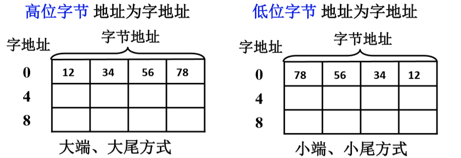
- 设地址线 24 根 按字节寻址 2^24=16MB
- 若字长为 16 位 按字寻址 8MW (W 是 16 位)
- 若字长为 32 位 按字寻址 4MW
存储子长：一次能读出或者写入的字长，若字长为 16 位，则一个字有两个字节，所以要留一根地址线指出该字中的哪个字节，即寻址范围是 2^(24-1)=8M.
判断编译器的大小端模式 链接到标题
short int x;
char x0,x1;
x=0x1122;
x0=((char*)&x)[0]; //低地质单元
x1=((char*)&x)[1]; //高地址单元
若 x0=0 下 1，则是大端，反之是小端。
主存的技术指标 链接到标题
-
存储容量 主存存放二进制代码的总位数
-
存储速度
- 存取时间 存储器的访问时间，读出时间和写入时间
- 存取周期 连续两次独立的存储器操作，读或写所需的最小间隔时间，读周期和写周期
-
存储器的带宽 位/秒
半导体芯片简介 链接到标题
半导体存储芯片的基本结构 链接到标题
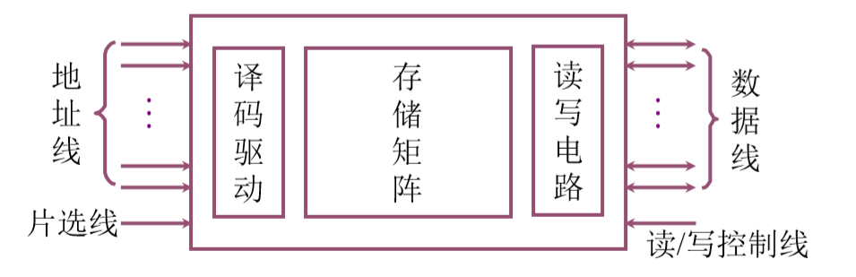
- 地址线(单向)，10|，14|，13
- 数据线(双向)，4|，1|，8
- 芯片容量，1K_4 位 |，16K_1 位 |，8K*8 位
- 片选线 CS(低电平有效) CE(使能信号) (片选线是芯片选择信号，它指出了这次操作给出的地址是不是针对这个存储芯片的地址，被选择的存储单元和字节是不是在这个芯片当中)
- 读/写控制线 WE(低电平写，高电平读)
- OE(允许读)，WE(允许写)
存储芯片片选线的作用 链接到标题
用(32 片)16K_1 位的存储芯片组成 64K_8 位的存储器
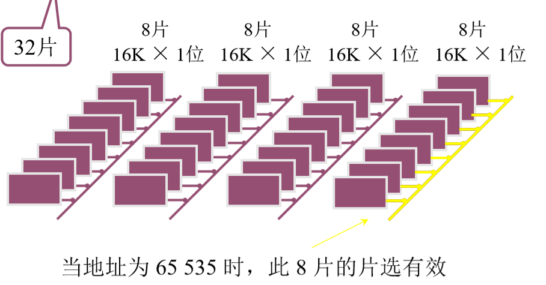
8 个芯片一组构成 8 位输出，这样的芯片布置 4 组。0-16k-1 为第一组
半导体存储芯片的译码驱动方式 链接到标题
线选法 链接到标题
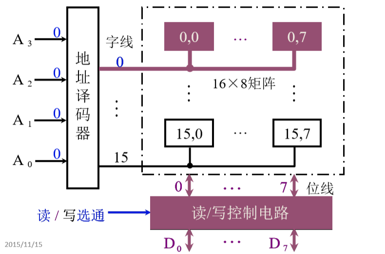
可以看出这个芯片是 16K*8 位，线选法像个数列，重合法像二维数组。
重合法 链接到标题
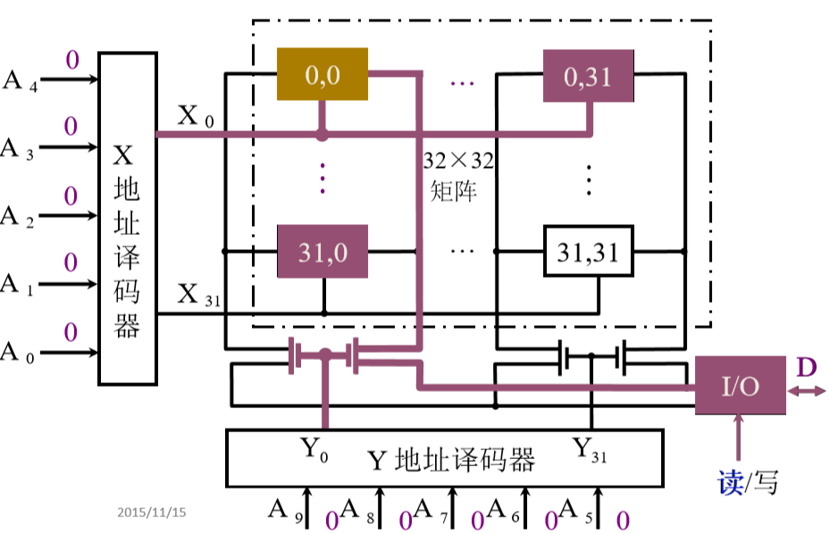
随机存取存储器 链接到标题
静态 RAM(SRAM) 链接到标题
SRAM 的基本电路 链接到标题
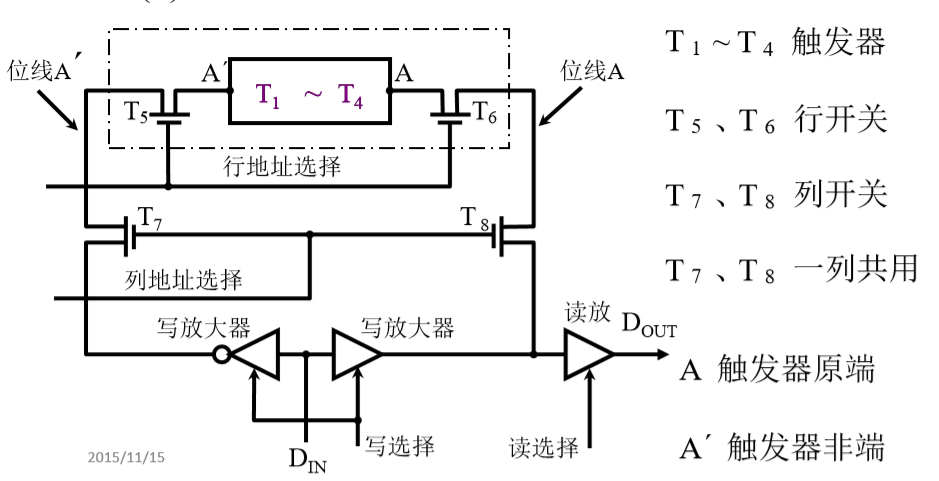
SRAM 基本电路的读操作 链接到标题
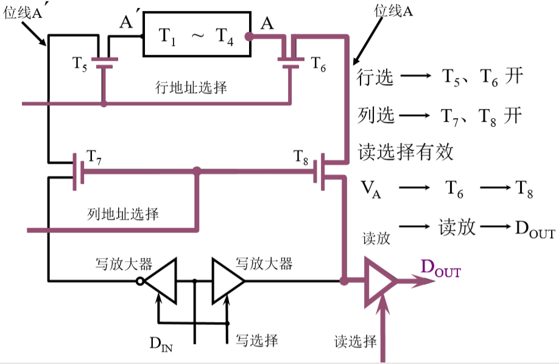
SRAM 基本电路的写操作 链接到标题
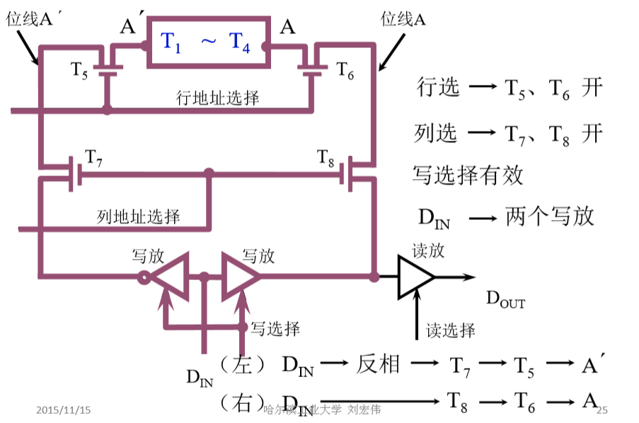
静态 RAM 芯片举例 链接到标题
Intel 2114 外特性
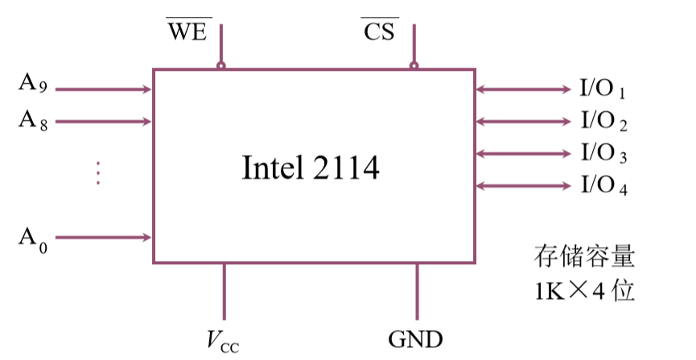
A0-A9 代表数据线，说明此芯片有 1k 存储容量，I/O1-4 说明此芯片一次能读出或写入 4 位数据，CS 代表片选信号，低电平选中此芯片，WE 是读写信号。
2114 读操作 链接到标题
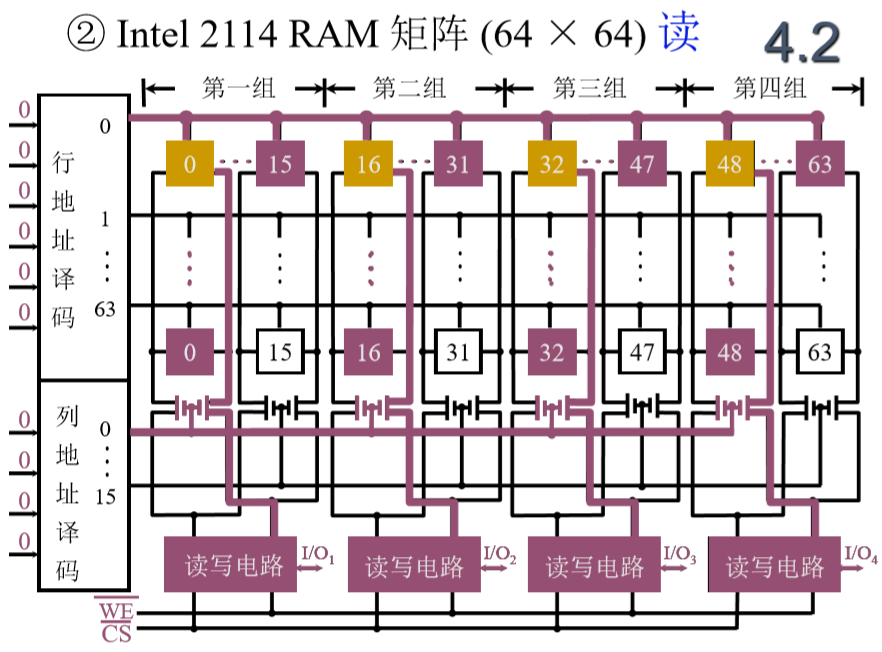
2114 写操作 链接到标题
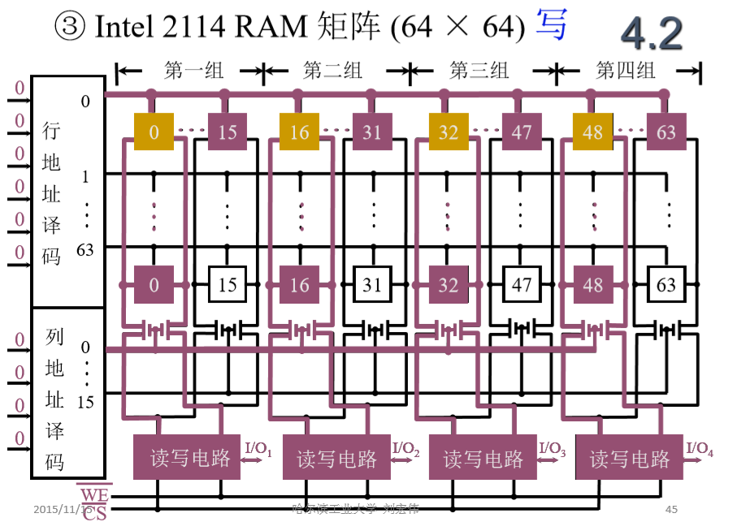
动态 RAM 链接到标题
动态 RAM 基本单元电路 链接到标题
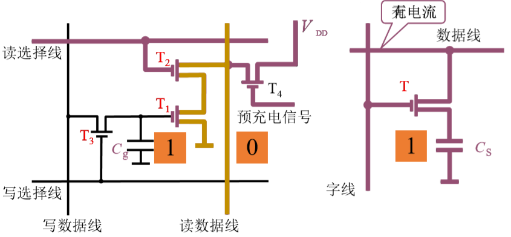
- 读出与原存信息相反 读出时数据线有电流为“1”
- 写入与输入信息相同 写入时 Cs 充电为“1”放电为“0”
动态 RAM 芯片举例 链接到标题
- 三管动态 RAM 芯片(Intel 1103)读
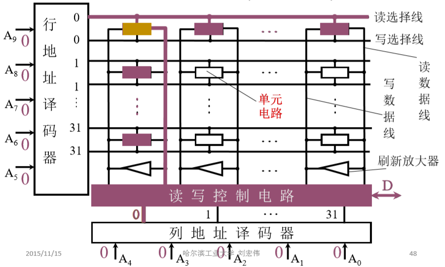
假设给出的行地址为 0，则第 0 行读选择线有效，第 0 行的所有单元被选中，列地址是 5 个 0，第 0 列被选中，第 0 行与第 0 列交叉的单元电路被选中，这个单元通过读数据线将数据送到读写电路上，实现了读操作。
- 三管动态 RAM 芯片(Intel 1103)写

假设行地址译码器给的地址为 5 个 1，则第 31 行被选中，第 31 行所有的单元电路准备写操作，假设给出的列地址为 00001，第 31 行第一列的单元电路被选中。
- 单管动态 RAM4116(16K*1 位)外特性
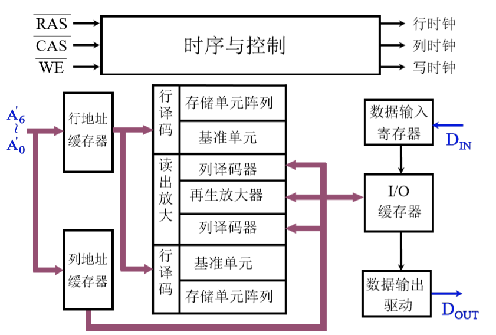
这种动态 RAM 只有 7 根地址线，分两次传送。第一次将 A0-A0 传入行地址缓存器，第二次传入列地址缓存器，经过译码器负责选择单元电路。
- 4116 读原理
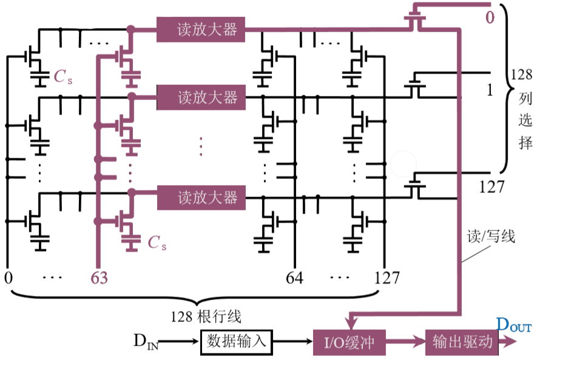
若给出的行地址为 0111111，则第 63 行有效，63 行所有的晶体管都打开，电容当中保存的信息会送出到读放大器的左侧，以第一个晶体管为例，如果晶体管有电，则第一个读放大器的左侧就为 1，右侧就为 0，假设列地址为 7 个 0，第 0 列被选中，第 0 列的列选信号有效，对应的晶体管打开，数据会从第 0 列的读放大器的右侧送入 I/O 缓冲。
- 4116 写原理
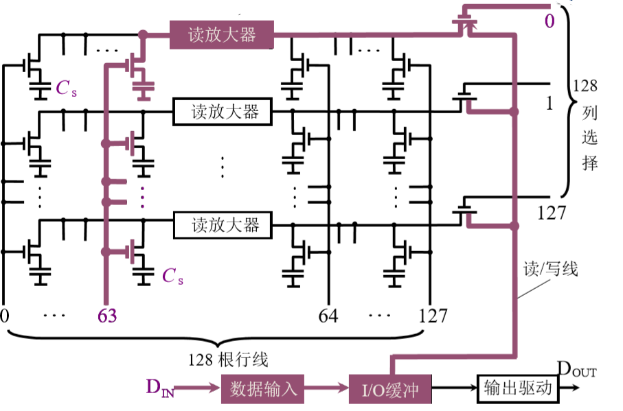
- 行地址 0111111，63 行被选中，所有晶体管打开，数据被送到读写线上，第 0 列有效，第 0 列晶体管打开，通过第 0 列读放大器右端，通过左端写入电容。
动态 RAM 刷新 链接到标题
电容容易漏电，所以必须需要对动态 RAM 进行刷新。
- 集中刷新(存取周期为 0.5us)以 128_128 矩阵为例，刷新与行地址有关_
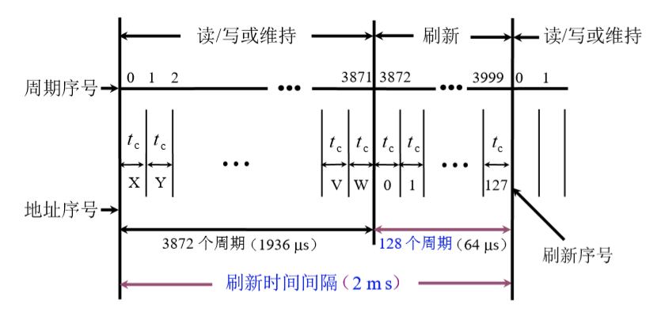
_“死区”为 0.5us_128=64us “死时间率”为 128/4000*100%=3.2%
- 分散刷新(存取周期为 1us)以 128*128 矩阵为例
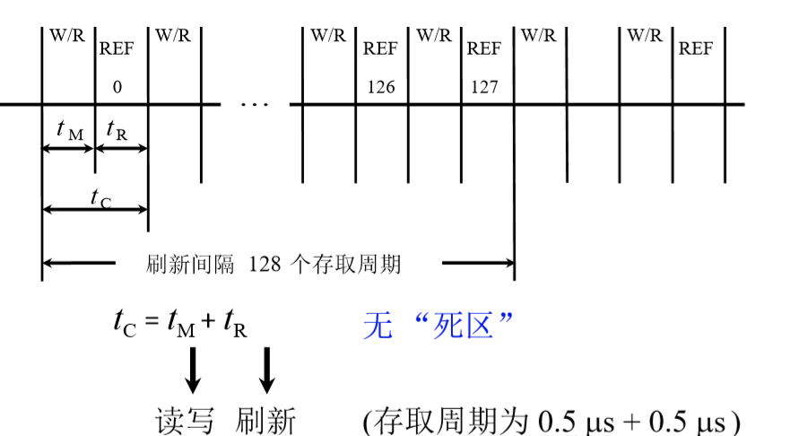
- 分散刷新与集中刷新结合(异步刷新)
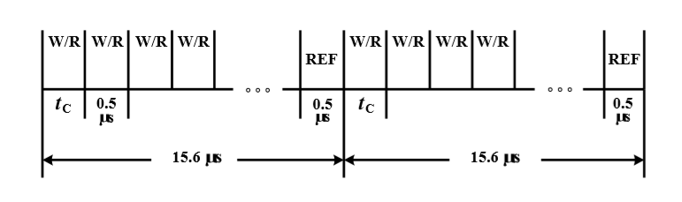
对于 128*128 的存储芯片(存取周期为 0.5us)，若每隔 15.6us 刷新一行 每行每隔 2ms 刷新一次，”死区”为 0.5us 将刷新安排在指令译码阶段，不会出现”死区”
动态 RAM 与静态 RAM 的比较 链接到标题
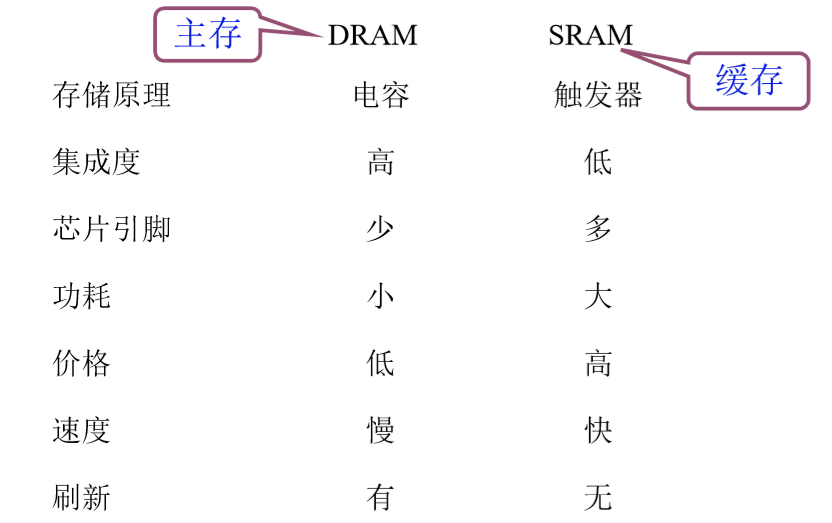